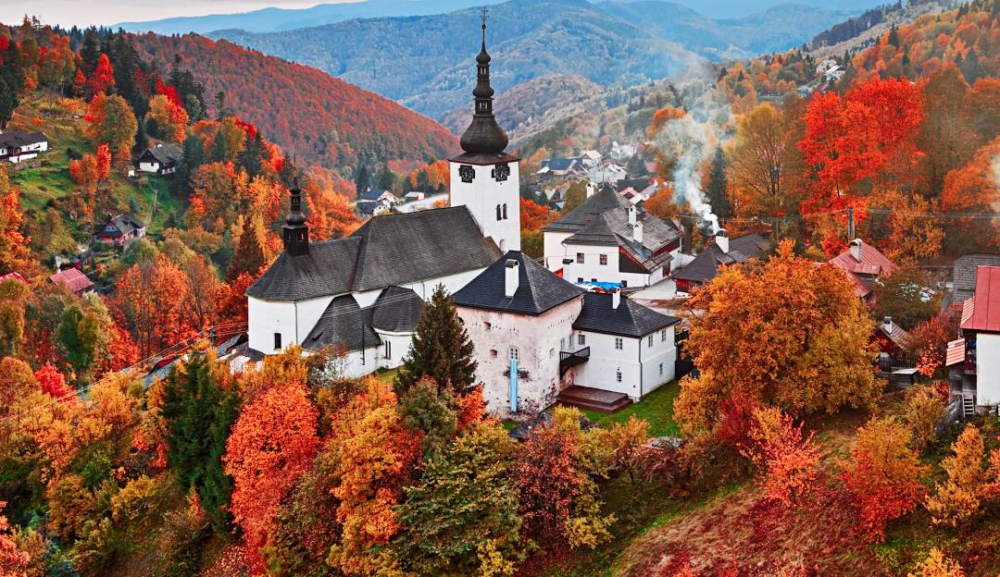

Slovakia
Slovakia, home to the Tatra Mountains, with 29 peaks higher than 2,500 metres (8,202 feet) AMSL, are the highest mountain range in the Carpathian Mountains. The country maintains a combination of a market economy with a comprehensive social security system, providing citizens with universal health care, free education, one of the lowest retirement age in Europe, and one of the longest paid parental leaves in the OECD. The manifestation of Slovak folklore culture is the "Východná" Folklore Festival. It is the oldest and largest nationwide festival with international participation, which takes place in Východná annually.
